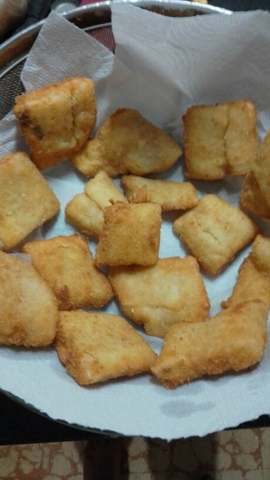

Bocados de Merluza Frita

Ingredientes
- dos limones
- 1/2 kg de merluza cortada transversalmente (10 a 15 cm)
- Pan rallado
- Harina (común, leudante o 0000)
- 1 huevo
- Aceite para frituras
Pasos
- Colocar la merluza cortada en una bandeja, sazonar con el jugo de dos limones y dejar descansar en la heladera 15 min.
- Cubrir cada pieza de merluza con harina y colocar en una superficie seca, tal como un plato cubierto por servilletas o papel sulfito
- En un bowl, batir un huevo hasta integrar totalmente la yema con la clara
- Tomar las piezas de merluza con harina, pasarlas por el huevo e inmediatamente cubrirlas de pan rallado, ejerciendo presión suave
- Una vez cubiertas todas las piezas de merluza, calentar el aceite en la freidora a 180 ºC
- Fritar las piezas de acuerdo al tamaño de la freidora, por un tiempo máximo de 1 minuto
- Colocar las piezas en un colador o rejilla metálica con papel absorbente
- Servir acompañado de puré de papas, papas fritas, arroz o ensalada a gusto (opcional)